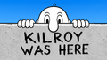

Chapter 1
Kilroy Was Here
What the wartime phenomenon was, why the phrase and drawing became inseparable, and why their origins must be studied separately.
Begin the historyHistorical background
The familiar long-nosed man peering over a wall looks simple. His history is not. The phrase “Kilroy was here,” the peering figure, British Chad, Australian Foo, shipyard practice, servicemen’s folklore, and postwar legend appear to be overlapping traditions rather than one tidy invention.
This history treats them separately before showing how they converged. Documented evidence is distinguished from plausible reconstruction and from stories that became part of Kilroy folklore.

Chapter 1
What the wartime phenomenon was, why the phrase and drawing became inseparable, and why their origins must be studied separately.
Begin the historyChapter 2
How an anonymous joke traveled through ships, bases, battlefields, barracks, bridges, and latrines across a global war.
Read chapter 2Chapter 3
James J. Kilroy, the Fore River Shipyard explanation, competing claims, and the limits of what can be proved.
Read chapter 3Chapter 4
Prewar peering figures, including the remarkable Kilroy-like drawings preserved in Virginia’s Civilian Conservation Corps plans.
Read chapter 4Chapter 5
British and Australian relatives of Kilroy and the older international tradition of soldiers leaving an anonymous presence behind.
Read chapter 5Chapter 6
How a name, a phrase, a drawing, and several strands of military humor plausibly became the American icon remembered today.
Read chapter 6Chapter 7
A three-word message, an easy drawing, millions of moving servicemen, and a distribution network that needed no publisher.
Read chapter 7Chapter 8
Hitler, Stalin, impossible appearances, and the folklore that grew naturally from a character whose defining trait was being everywhere first.
Read chapter 8Chapter 9
How Kilroy moved from military graffiti into civilian humor, film, television, books, cartoons, and cultural memory.
Read chapter 9Chapter 10
From illicit wartime mark to deliberately hidden engraving at the National World War II Memorial.
Read chapter 10Reference apparatus
Primary and secondary sources, archival material, source criticism, and notes on disputed claims.
View sources